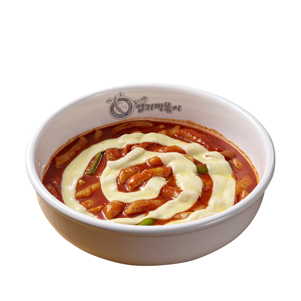
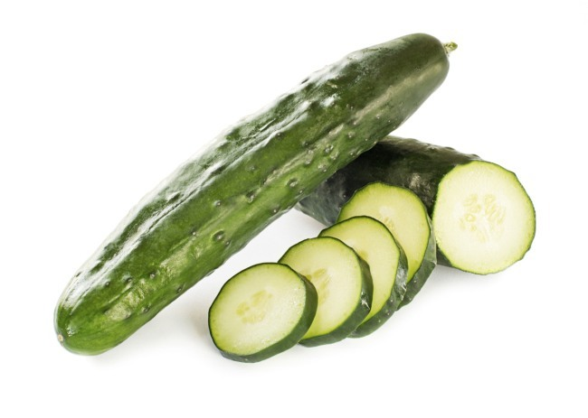

2007.03 ~ 2013.02 번동초등학교 2013.03 ~ 2016.02 번동중학교 2016.03 ~ 2019.02 혜원여자고등학교과학중점과정 2019.03 ~ 세종대학교 데이터사이언스학과
 매운 떡볶이를 매우 좋아한다. 떡볶이는 맨날 먹어도 안질린다. 체리모양을 좋아한다. 그중에서도 키르시라는 브랜드를 가장 좋아한다. 체리모양의 무언가는 거의 모든지 사는편이다.
 오이는 정말 싫다. 맛 없다. 김밥을 좋아하지만 오이가 들어가면 매우 싫다. 귀신은 매우 무섭다. 그래서 공포영화도 못 본다. 이미지를 첨부하려 했지만 차마 너무 무서워서 첨부하지 못함.